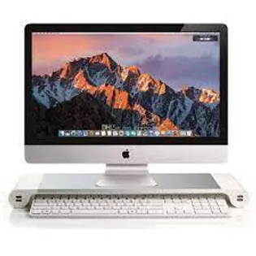
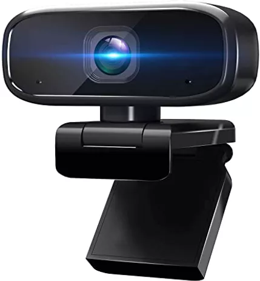
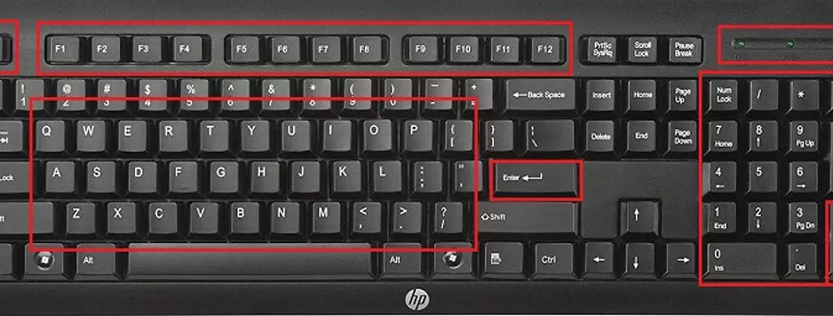

MONITORES - CÁMARA WEB - TECLADO
¿Qué es el monitor?
El monitor es un dispositivo electrónico de salida de la computadora en el que se muestran las imágenes y textos generados por medio de un adaptador gráfico o de video de ésta. El término monitor se refiere normalmente a la pantalla de vídeo, y su función principal y única es la de permitir al usuario interactuar con la computadora. Una computadora típica presenta un monitor con tecnología CRT (tubos de rayos catódicos), la misma que emplean los televisores; sin embargo, hoy en día existe la tecnología TFT (transistor de película fina) que reduce significativamente el volumen de los monitores.
¿Qué son las cámaras web?
Una cámara web o cámara de red es una pequeña cámara digital conectada a una computadora la cual puede capturar imágenes y transmitirlas a través de Internet, ya sea a una página web u otras computadoras de forma privada. Una cámara web necesita una computadora para transmitir las imágenes. Sin embargo, existen otras cámaras autónomas que únicamente necesitan un punto de acceso a la red informática, bien sea a ethernet o inalámbrico. Para diferenciarlas de las cámaras web se las denomina cámaras de red. Ambas son útiles en tareas de seguridad, para videovigilancia.
Teclado
Un teclado de ordenador es un periférico o dispositivo de entrada que se usa para introducir caracteres y funciones en el sistema informático presionando los botones o teclas. Es el dispositivo principal que se utiliza para introducir texto. Normalmente contiene teclas para letras individuales, números y caracteres especiales, así como teclas para funciones específicas. Está conectado a un sistema informático (computadora, ordenador o tablet) mediante un cable o una conexión inalámbrica, a excepción de los ordenadores portátiles que lo traen incorporado en el conjunto. Las partes y funciones del teclado son muy similares entre todos los fabricantes y el diseño es muy similar. Los elementos que componen un teclado son básicamente; las teclas individuales para letras, números y caracteres especiales, que colectivamente se denominan teclas de caracteres. El diseño de las teclas se deriva del diseño original de las teclas en una máquina de escribir. El diseño más utilizado en el idioma español/inglés se llama QWERTY, llamado así por la secuencia de las primeras seis letras de la parte superior izquierda. Otros conjuntos de teclas comunes a casi todos los teclados son las teclas de ingreso o enter y edición (por ejemplo, Intro, Borrar, Insertar), las teclas modificadoras (por ejemplo, Control, Mayús), las teclas de navegación (por ejemplo, las flechas arriba, abajo, izquierda, derecha) y teclas de bloqueo (por ejemplo, Bloqueo de Mayúsculas o Bloq Mayús). Las teclas de función especial adicionales son muy específicas del sistema operativo (como las teclas de Windows y Apple).
Historia
Los primeros monitores surgieron en 1981, los MDA (Adaptador de pantalla monocromo), eran monocromáticos y estaban diseñados para el modo de texto.